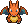
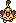

劈開Slash
- 屬性
- 一般
- 分類
- 物理
- 威力
- 70
- 命中
- 100%
- SP
- 25
- 冷卻
- 1.8 秒（物理組）
- 範圍
- 近戰
- 距離
- 1 格
- 段數
- 1
- 前搖
- 0.6 秒
- 接觸
- 是
- 要害
- 高機率
招式分類跟隨招式的 屬性 （第三世代規則，與火紅／葉綠相同）：火、水、草、電、超能力、冰、龍、惡屬性招式一律是特殊招式；其他屬性是物理招式（例外：分擔痛楚）。因此暗影球是物理招式，攀瀑是特殊招式。這是刻意設計，不是錯誤。
即時戰鬥效果
容易擊中要害。
命中使用者正前方的一個目標。
升級時學會
 小火龍 Lv 37
小火龍 Lv 37 火恐龍 Lv 41
火恐龍 Lv 41
噴火龍 Lv 44 穿山鼠 Lv 23
穿山鼠 Lv 23 穿山王 Lv 24
穿山王 Lv 24 派拉斯 Lv 31
派拉斯 Lv 31 派拉斯特 Lv 35
派拉斯特 Lv 35 地鼠 Lv 33
地鼠 Lv 33 三地鼠 Lv 38
三地鼠 Lv 38
喵喵 Lv 40 貓老大 Lv 49
貓老大 Lv 49 大蔥鴨 Lv 41
大蔥鴨 Lv 41 飛天螳螂 Lv 31
飛天螳螂 Lv 31 鐮刀盔 Lv 40
鐮刀盔 Lv 40 小鋸鱷 Lv 35
小鋸鱷 Lv 35 藍鱷 Lv 37
藍鱷 Lv 37 大力鱷 Lv 38
大力鱷 Lv 38 天蠍 Lv 36
天蠍 Lv 36 巨鉗螳螂 Lv 31
巨鉗螳螂 Lv 31 狃拉 Lv 50
狃拉 Lv 50 熊寶寶 Lv 37
熊寶寶 Lv 37 圈圈熊 Lv 37
圈圈熊 Lv 37 火稚雞 Lv 34
火稚雞 Lv 34 力壯雞 Lv 39
力壯雞 Lv 39 火焰雞 Lv 42
火焰雞 Lv 42 直衝熊 Lv 41
直衝熊 Lv 41 過動猿 Lv 31
過動猿 Lv 31 鐵面忍者 Lv 31
鐵面忍者 Lv 31 巨牙鯊 Lv 33
巨牙鯊 Lv 33 貓鼬斬 Lv 19
貓鼬斬 Lv 19 太古羽蟲 Lv 49
太古羽蟲 Lv 49 太古盔甲 Lv 55
太古盔甲 Lv 55 變隱龍 Lv 31
變隱龍 Lv 31 阿勃梭魯 Lv 36
阿勃梭魯 Lv 36 音箱蟀 Lv 26
音箱蟀 Lv 26 蜂女王 Lv 31
蜂女王 Lv 31 魅力喵 Lv 37
魅力喵 Lv 37 東施喵 Lv 37
東施喵 Lv 37 臭鼬噗 Lv 22
臭鼬噗 Lv 22 坦克臭鼬 Lv 22
坦克臭鼬 Lv 22 圓陸鯊 Lv 25
圓陸鯊 Lv 25 尖牙陸鯊 Lv 28
尖牙陸鯊 Lv 28 烈咬陸鯊 Lv 28
烈咬陸鯊 Lv 28 遠古巨蜓 Lv 43
遠古巨蜓 Lv 43 艾路雷朵 Lv 22
艾路雷朵 Lv 22招式光碟
 一般屬性招式光碟 ・稀有（每打倒一隻該屬性寶可夢 0.3%，由 20 個招式分配）
一般屬性招式光碟 ・稀有（每打倒一隻該屬性寶可夢 0.3%，由 20 個招式分配）
可以教會 469 隻寶可夢：遊戲中的每一隻都能學（一般屬性招式不限屬性）。